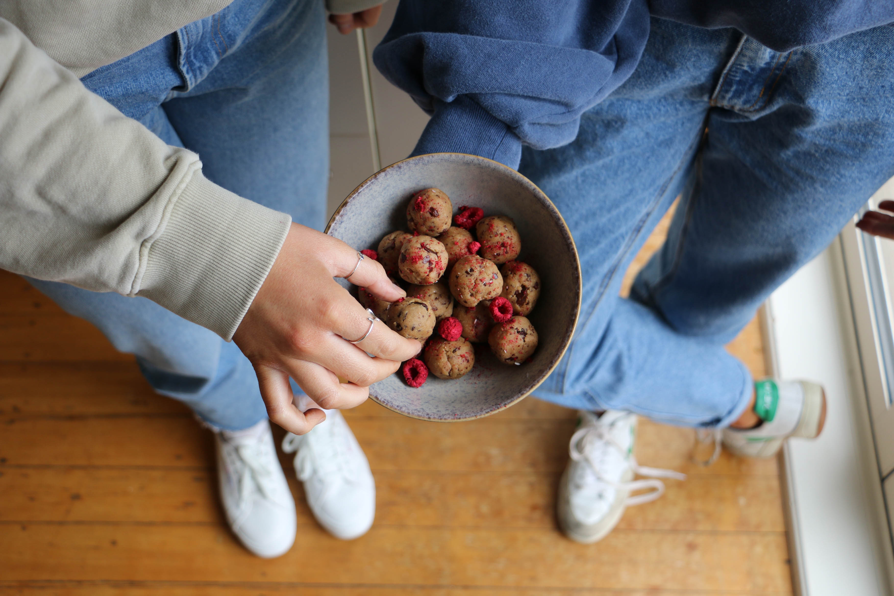
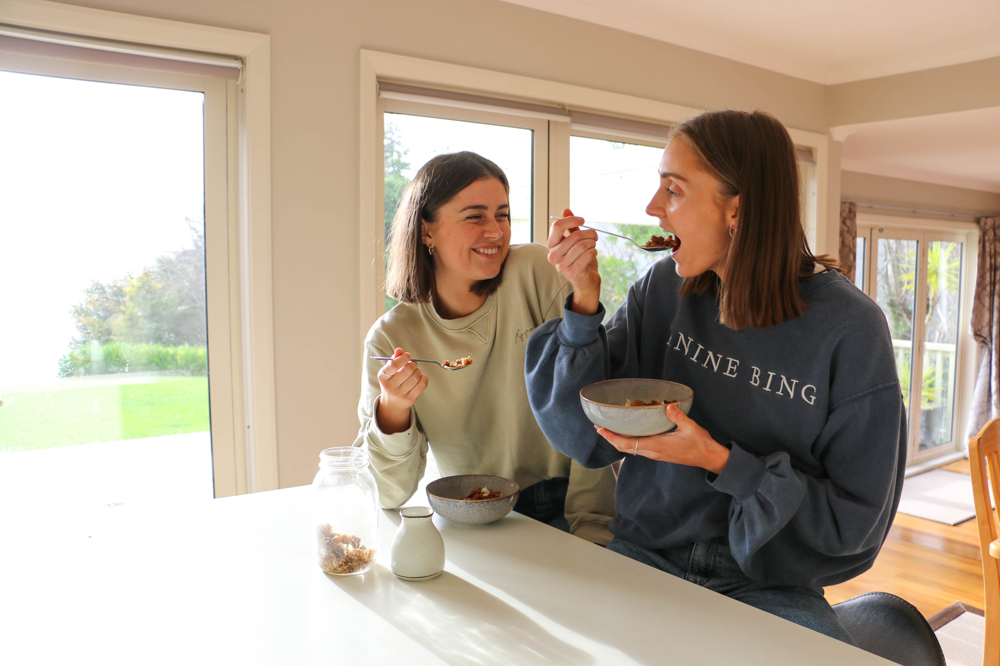
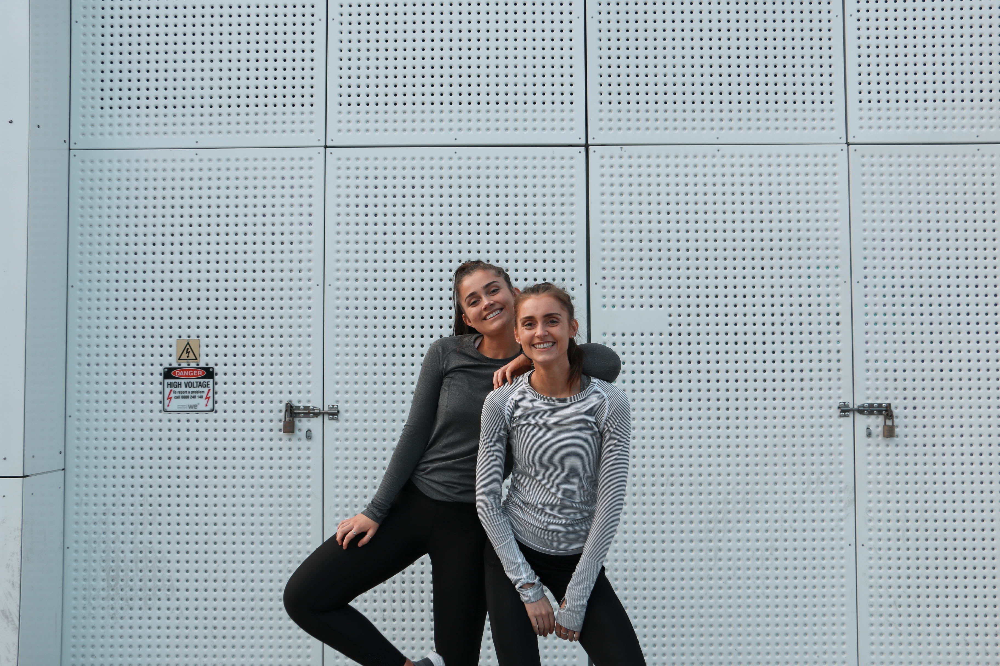

Tasty Twins Logo
The Instagram food and fitness influencers Tasty Twins approached me to create a new logo design for their Instagram page.

They wanted to keep the main photo that they currently had as this is familiar to their audience. They also preffered white as the font colour.
I have recently worked with these clients again doing some photography for an upcoming project.


